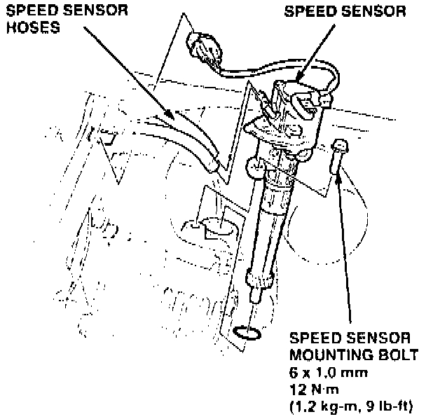
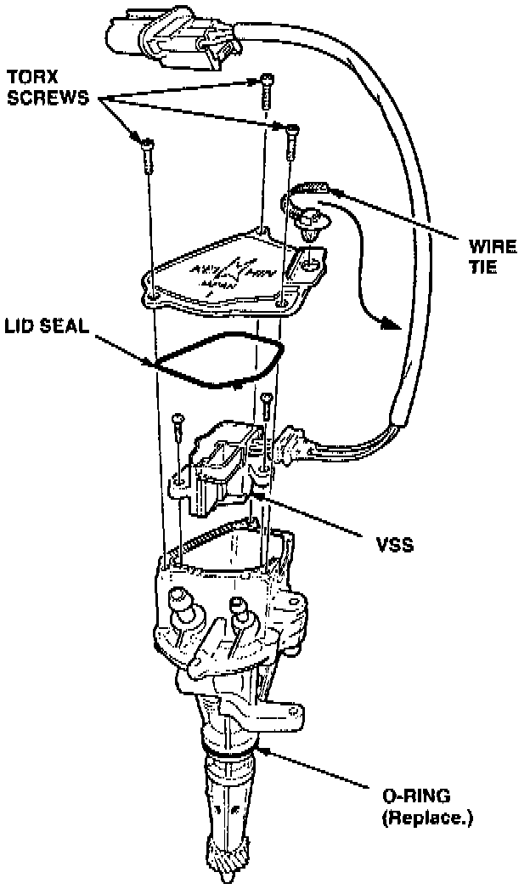

Vehicle Speed Sensor - Failure
November 1, 1994YEAR
1991-94
MODEL
LEGEND
VIN APPLICATION
ALL
BULLETIN NO.
94-018
Vehicle Speed Sensor Failure
PROBLEM
Diagnosis (see section 23 of the service manual) shows that the Vehicle Speed Sensor (VSS) is malfunctioning.
CORRECTIVE ACTION
Replace the VSS with the kit listed under PARTS INFORMATION.
NOTE:
This kit eliminates the need to replace the complete power steering speed sensor assembly because of a malfunctioning VSS.
1. Raise the car on a hoist.
2. Disconnect the speed sensor assembly electrical connector from the harness.
3. Disconnect the hoses from the speed sensor assembly, and plug the ends.

4. Remove the mounting bolt. Remove the speed sensor assembly from the differential.

5. Remove the three Torx T2O tamper-proof screws. Remove the speed sensor assembly cover and lid seal.
6. Remove the mounting screws, then remove the VSS.
7. Install the new VSS from the kit. Install the cover with a new lid seal and Torx screws from the kit. Install the new wire tie.
8. Install a new O-ring on the speed sensor assembly. Reinstall the assembly in the car.
9. Start the engine and turn the steering wheel from lock-to-lock several times to bleed air out of the power steering system. Turn off the engine.
10. Check the power steering speed sensor for leaks. Check the reservoir; top it off if necessary.
PARTS INFORMATION
Vehicle speed sensor kit (VSS, lid seal, 3 Torx screws,
nylon wire tie): P/N 06560-PY3-000
0-ring, 23.5 by 2 mm: P/N 91313-611-010
WARRANTY CLAIM INFORMATION
In warranty:
The normal warranty applies.
Out of warranty:
Any repair performed after warranty expiration may be eligible for goodwill consideration by the District Technical Manager or your Zone Office. You must request consideration, and get a decision, before starting work.
Operation number: 513141
Flat rate time: 0.7 hour
Failed P/N: 56500-PY3-A01
Defect code: 068
Contention code: B01